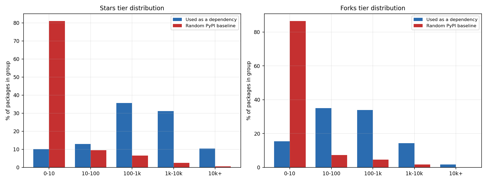
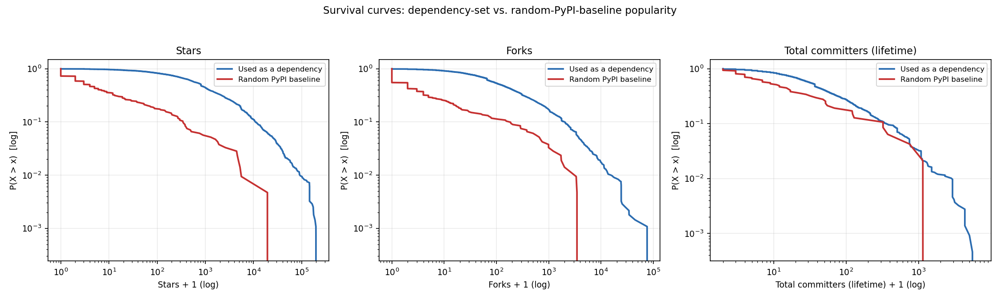
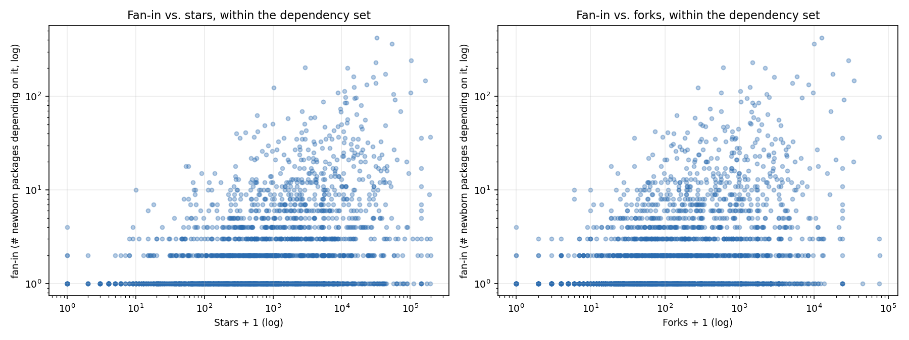
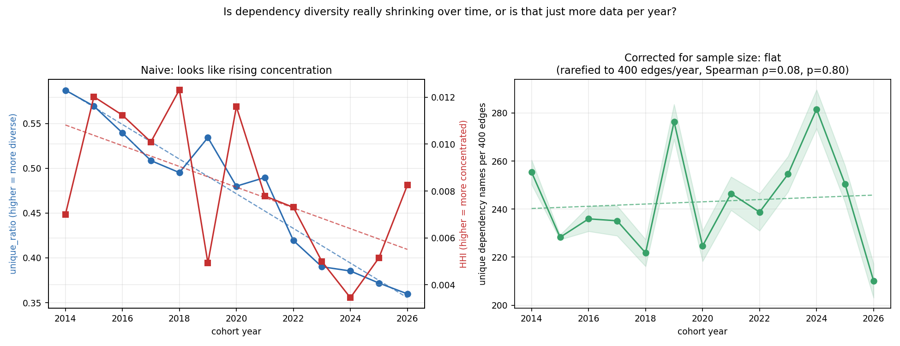
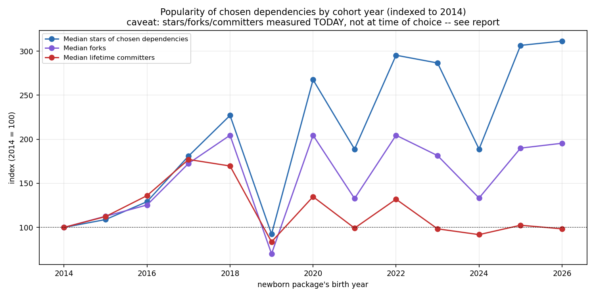
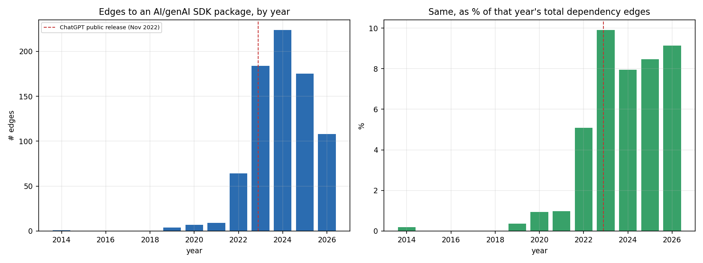

Hypothesis under test: a package with more stars, forks, or contributors is highly probably in the dependency list of a newly-created package. Answer, up front: yes, decisively for stars and forks, more modestly for contributor count — and the effect is not just "of course famous packages get used," it holds up against a genuine random-package baseline, not just against intuition. A follow-up question — is this effect getting stronger over time, and is that AI-driven? — gets a more mixed answer: rising dependency popularity by cohort year, yes; newborn packages converging on a smaller, more repeated set of dependencies, no (a naive signal that doesn't survive a sample-size correction).
Reuses the 1,530 packages from the vintage-cohort study as
"newborn packages": for each one, its declared dependencies were parsed
directly from the manifest at the exact same git snapshot already used to
measure its code structure (pyproject.toml's [project.dependencies] /
[tool.poetry.dependencies], setup.py's install_requires — including
the common pattern where it's a module-level variable referenced by name,
not just an inline list — and root requirements.txt). This is a
case-control design, not a description: "the dependencies people
actually use are popular" is nearly tautological on its own (of course
requests and numpy show up) — the real test is whether the set of
packages that get used as a dependency is drawn from a more popular slice
of the ecosystem than a package chosen at random would be. That needs a
baseline, so alongside the dependency set this pulls a random sample of
400 PyPI packages (sampled popularity-blind, from ecosyste.ms's default
package ordering rather than any downloads/stars sort) to compare against.
Popularity metrics (stars, forks, lifetime contributor count) come from
ecosyste.ms, which mirrors GitHub repo metadata
per PyPI package in a single API call — no GitHub API involved, so none
of the unauthenticated-rate-limit constraints from the vintage study
applied here (ecosyste.ms's own limit is 5,000 requests/window).
"Contributors" = repo_metadata.commit_stats.total_committers, a lifetime
count of everyone who ever committed, not a recent/active-contributor
count.
Coverage: 1,156 of 1,530 newborn packages (76%) had at least one
extractable dependency (374 had none — some legitimately ship with zero
external dependencies this early, some declare dependencies dynamically
in a way that can't be read without executing setup.py, which this
deliberately never does). That yielded 14,832 (newborn → dependency) edges
across 3,025 unique dependency names, of which 2,988 (98.8%) resolved to
a real PyPI package on ecosyste.ms. All 400 baseline packages resolved.

| metric | dependency-set median | baseline median | ratio | Mann-Whitney p | P(random dependency > random baseline) |
|---|---|---|---|---|---|
| stars | 813 | 3 | 271× | 2.4×10⁻⁸⁴ | 89.9% |
| forks | 119 | 1 | 119× | 1.1×10⁻⁷⁴ | 87.4% |
| lifetime contributors | 36 | 11 | 3.3× | 3.4×10⁻⁵ | 66.9% |
The last column is the common-language effect size: pick one package used as a dependency and one random baseline package — that's the probability the dependency one has the higher value. For stars and forks that's still around 90%, about as clean a separation as this kind of ecosystem data ever produces, and the underlying medians are more trustworthy now that the baseline sample (still the same 400 random PyPI packages, unaffected by scaling the newborn side) is being compared against 3x the dependency-set data. 81% of a typical random PyPI package has 10 stars or fewer — that's the modal case for "a package on PyPI," not an edge case — while only 10.0% of used-dependencies fall in that bin; 10.3% of dependencies have 10,000+ stars against 0.5% of random packages.

Contributors is the same direction but visibly weaker — 67% is a real, statistically solid effect (p = 3.4×10⁻⁵), not noise, but nowhere near the stars/forks separation. A plausible reading: stars and forks are largely driven by visibility (how many people have seen and reacted to the repo), which is exactly the kind of signal that would drive independent package authors toward a dependency in the first place — whereas lifetime-contributor-count also reflects how long a project has existed and how many people happened to submit even a single patch, which is a noisier proxy for "would a newcomer pick this."

Restricting to only the packages that are used as a dependency, does being used by more of the 1,530 newborns (higher "fan-in") track with being more popular? Yes, but only moderately: Spearman ρ = 0.34 for stars, 0.34 for forks, 0.30 for contributors (all p < 10⁻⁴⁵, so the relationship is certainly real, just not tight). The scatter plot shows why: packages used by only 1 of the 1,530 newborns span the entire star range, from single digits to 100,000+ — a highly-starred package can still be a niche dependency picked up by just one or two of this specific sample. But high fan-in (10+ newborns depending on it) essentially never happens below a few hundred stars. Read together: popularity looks close to a necessary condition for broad adoption as a dependency, but it is not sufficient — a package also has to be generically useful across many different projects' domains, which star count alone doesn't capture.
| package | used by (of 1,530) | stars | forks | lifetime contributors |
|---|---|---|---|---|
| numpy | 422 | 32,629 | 12,691 | 1,838 |
| requests | 364 | 54,279 | 10,119 | 742 |
| torch | 242 | 102,657 | 29,031 | 5,024 |
| tqdm | 230 | 31,306 | 1,500 | 120 |
| pyyaml | 203 | 2,941 | 601 | 42 |
| pillow | 200 | 12,226 | 2,226 | 491 |
| pandas | 174 | 43,640 | 17,915 | 3,550 |
| scipy | 163 | 14,990 | 5,909 | 1,667 |
| pydantic | 160 | 28,734 | 2,931 | 597 |
| transformers | 147 | 164,705 | 34,419 | 2,816 |
| openai | 138 | 31,557 | 5,173 | 115 |
| matplotlib | 133 | 23,145 | 8,468 | 1,730 |
| click | 126 | 15,104 | 1,381 | 373 |
| six | 124 | 1,029 | 276 | 67 |
| uvicorn | 114 | 10,939 | 1,022 | 198 |
| fastapi | 109 | 102,037 | 9,837 | 764 |
| python-dotenv | 109 | 8,868 | 571 | 102 |
| rich | 106 | 57,318 | 2,329 | 268 |
| pytest | 98 | 11,329 | 2,494 | 977 |
| torchvision | 97 | 16,162 | 6,946 | 585 |
Full table: output/deps/analysis/top20_most_depended_on.csv. Note
pyyaml and six sit near the bottom of this list's star counts (2,941
and 1,029) yet rank in the top 10 by fan-in — both are exactly the
"generically useful, low-glamour utility" case the fan-in-vs-popularity
finding above predicts: broadly adopted despite modest visibility,
because nearly every project needs them. fastapi and rich are new
entrants at 3x scale (both weren't in the original 10/quarter top-20) —
consistent with a larger sample surfacing more of the genuinely broad,
not just the loudest, common dependencies.
Hypothesis under test: the popularity effect above is getting stronger — newer packages, more likely built with AI assistance, converge on the same well-known dependencies more than older ones did. This needs two separate questions, and they get different answers:

The direct way to test "are cohorts repeating the same names more" is to look at unique dependency names as a share of that cohort's total edges, or a Herfindahl-Hirschman Index (HHI) of how concentrated each cohort's edges are across names. Both look like they're rising, and the naive signal only got stronger with 3x the data: unique-names-per-edge drops from 0.59 (2014) to 0.36 (2026) (Spearman ρ=-0.98, p=7.8×10⁻⁹ by year), and HHI is noisier but trends the same direction.
This is a sample-size artifact, not a behavioral change. Edge volume grew roughly 5× at its peak over the window (557 edges in 2014 → 2,818 in 2024) simply because the corpus has more packages and each has more resolved dependencies in later cohorts — and drawing more names from any fixed pool mechanically produces more repeat collisions on already-seen names, shrinking the unique-ratio, with zero change in the underlying selection process required. The standard ecological fix is rarefaction: repeatedly subsample the same number of edges (400, picked just below the smallest cohort's 404) from every year and compare the average number of distinct names recovered — an apples-to-apples diversity comparison that doesn't care how much total data a year happened to produce. Rarefied diversity is flat across all 13 years (Spearman ρ=0.08, p=0.80) — no trend at all, well within year-to-year noise, and if anything the point estimate now leans slightly positive rather than negative. Once sample size is controlled for, there is no evidence that newborn packages are converging on a smaller set of dependencies now than they were in 2014. The naive numbers were real, but they were measuring corpus growth, not choice behavior — and this null result got more convincing, not less, with 3x the underlying data.
A second, independent check points the same way: share_edges_to_global_top20
— what fraction of each cohort's edges land on one of the all-time
top-20 most-depended-on packages from the table above — has no trend
either (p=0.79 by year, p=0.99 by quarter), bouncing between 0.16 and
0.32 with no direction. Recent cohorts aren't leaning on the same
famous packages any more than early cohorts did.

Median stars of a cohort's chosen dependencies rose from 2,848 (2014) to 8,868 (2026) — noisy quarter to quarter but a real, now more convincing trend with 3x the data (Spearman ρ=0.81, p=0.0008 by year; ρ=0.57, p=1.6×10⁻⁵ by quarter). Median forks moves the same direction, still weaker (ρ=0.51, p=0.07 by year — suggestive, not clean). Median lifetime contributor count of chosen dependencies shows no trend at all (ρ=-0.48, p=0.10 by year) — flat across the entire window, and if anything drifting slightly down (122 in 2014 vs. 120 in 2026). This is the same pattern as the main case-control result above: stars and forks move together and respond to whatever is driving this, contributor count doesn't, consistent with stars/forks being more of a visibility signal and contributor count reflecting something else (project age/size).
This finding carries a real confound the concentration one doesn't have, and it needs to be stated plainly rather than after the fact: every popularity number in this whole report is measured today (2026), not at the moment each cohort actually made its choice. A dependency a 2014-born package picked has had 12 more years to accumulate stars than one a 2025-born package picked yesterday. So this rising trend is consistent with "newer cohorts increasingly pick already-famous packages" — but it's equally consistent with "cohorts of every era pick similarly-positioned packages, and the ones from 2014 just kept accumulating stars in the years since." This dataset cannot separate those two stories; doing so would need each dependency's star count at the time it was chosen, which isn't available from ecosyste.ms's current-snapshot data.

Edges to a curated list of LLM/genAI SDK packages (openai, anthropic,
transformers, langchain*, tiktoken, huggingface-hub, and similar —
deliberately excluding generic ML frameworks like torch that predate
and extend well beyond the recent LLM wave) go from essentially zero
before 2022 to 5–10% of all dependency edges in 2022–2026, tracking the
November 2022 ChatGPT release almost exactly. That part of the
hypothesis — newborn packages increasingly building on AI/LLM tooling —
is unambiguously true in this data.
What it does not do is explain away the concentration finding, because there's nothing to explain away: re-running both the naive and rarefied concentration tests with all 776 AI/genAI SDK edges (of 14,832 total) excluded leaves the trend statistically identical — Spearman ρ=-0.978, p=7.8×10⁻⁹ either way, since it's a rank-based test and removing a roughly proportionate share of edges from every year doesn't reorder the years — with only the raw last-year value nudging slightly (0.360 with AI edges included vs. 0.382 without). This was checked specifically to rule out "concentration looks like it's rising only because more recent packages are themselves AI wrappers sharing 2–3 SDK imports" — that's not what's happening; there's no real concentration trend to begin with, with or without the AI packages in the picture.
This dataset cannot attribute any of this to AI-assisted authorship specifically — nothing here measures whether a given commit was written by a human or a coding assistant; an AI/genAI SDK dependency is a topic signal (what a package is about), not a usage signal (how it was written). AI_USAGE_REPORT.md measures the latter directly — commit trailers and config files that self-disclose an AI coding tool, read from the same 1,530 packages' git history — and finds self-disclosed AI-tool usage climbing from ~0% (pre-2022) to 73% of the (partial) 2026 cohort, overtaking AI-SDK topic dependence as the dominant signal by 2025. It's a floor, not a full measurement (most AI-assisted commits leave no trace at all), but it's direct evidence rather than an inference from what a package imports.
total_committers is a lifetime count, not weighted by recency —
an old, large, but now-quiet project can out-rank an actively-growing
one on this metric alone.openai, transformers)
reflects when these 1,530 packages were sampled and searched for
(2014–2026, weighted toward however GitHub's own growth distributes
across that window — see the vintage study's caveat on this) more than
it reflects the general PyPI ecosystem.output/deps/edges.csvoutput/deps/newborn_manifest_summary.csvoutput/deps/dependency_popularity.csvoutput/deps/baseline_popularity.csvoutput/deps/analysis/*.csvoutput/deps/analysis_time/*.csvpython3 src/deps_extract.py && python3 src/deps_popularity.py
&& python3 src/deps_analysis.py && python3 src/deps_charts.py
&& python3 src/deps_time_analysis.py && python3 src/deps_time_charts.py